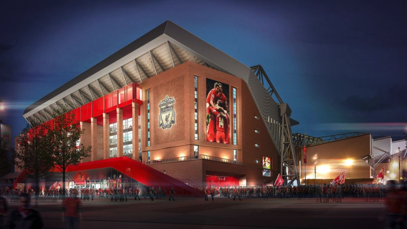

안필드
YNWA 을 응원가로 쓰는 잉글랜드 프리미어 리그 팀 리버풀 의 홈구장으로 개인적으로 제일 가보고싶은곳이다.
원정팀의 지옥이라고 불리는 안필드는 좌석수 54,074석 이며 잉글랜드 구장중 7번째로 많은 좌석 수를 가진 구장이다.
물론 최근에 홈 6연패를 하긴 했지만 그 전까지는 68경기 리그 무패행진을 하며 연승을 하고있었다.
관중이 가득차있는 안필드에서 관중들의 응원가 부르는것은 티비를 통해서도 보고있는 나까지 거기에 있는거처럼 느껴질정도로
팬들의 뜨거운 분위기 까지가 안필드 라고 할수있다.
현재 코로나로 인해서 경기중에 관중이 들어갈수 없다.